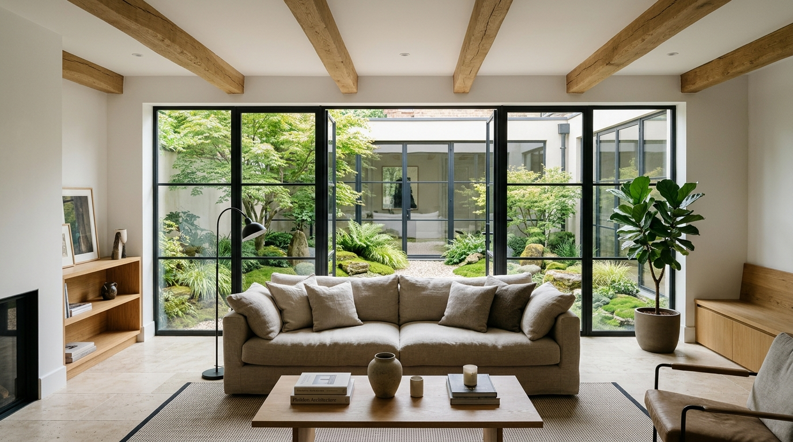

Datos homogéneos en USD y m²
Cada tarjeta y ficha presenta la misma estructura métrica para comparar casas, departamentos y terrenos bajo criterios consistentes.

Andes Hogar es una inmobiliaria ficticia creada por AV·STUDIO para mostrar cómo tu catálogo de propiedades puede filtrar por sector, operación y tipología con consulta directa por código.
Cada propiedad de esta demostración reúne únicamente información verificable en pantalla —tipo, superficie, habitaciones cuando aplica y precio referencial en dólares— para facilitar decisiones ordenadas sin ruido comercial.
Cada tarjeta y ficha presenta la misma estructura métrica para comparar casas, departamentos y terrenos bajo criterios consistentes.
Combina operación, tipología, sector de Cuenca y mínimo de habitaciones en el cliente sin recargas ni resultados confusos.
Cualquier propiedad seleccionada prellena el bloque de consulta con su código y resumen para escribir por WhatsApp sin pasos redundantes.

Vista interior ilustrativa del inmueble modelo AH-101 · Datos ficticios de demostración.
Residencia de dos plantas en conjunto cerrado tranquilo, acabados en madera y piedra andina.
Precios, ubicaciones y medidas ficticias orientadas a demostrar la búsqueda interactiva del portal.
Selección demostrativa de sectores sin direcciones exactas ni tiempos de traslado garantizados.
Conjuntos cerrados y residencias amplias adaptables tanto a vivienda familiar como a estudio.
Edificios contemporáneos con terrazas luminosas orientadas hacia la ribera del Tomebamba.
Suites y viviendas de estreno próximas a áreas verdes, ciclovía y equipamiento cotidiano.
Terreno residencial plano al norte de la ciudad en sector tranquilo con vía pavimentada.
Usa la barra de búsqueda o los accesos directos por sector para acotar las propiedades según tu objetivo de venta o alquiler.
Abre cada ficha detallada para revisar superficie, habitaciones disponibles y descripción antes de escribir.
Selecciona un inmueble para cargar automáticamente su código, operación y valor referencial en el mensaje directo.
Alcance demostrativo: Andes Hogar es una marca ficticia. Este ejemplo no agenda visitas confirmadas ni procesa reservas o trámites contractuales.